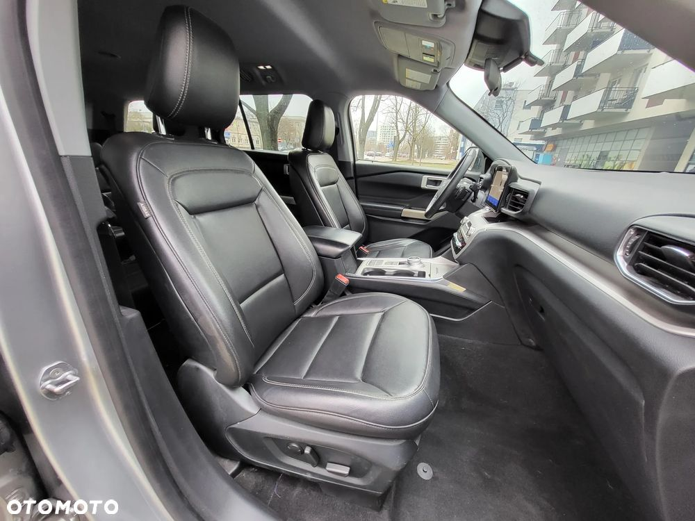
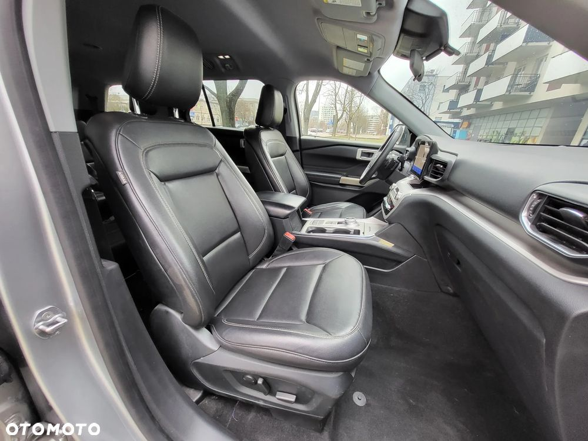

UWAGA , przed przyjazdem prosimy o wcześniejszy kontakt w celu dostępności auta na placu!!!!!
2020 Ford Explorer XLT, 2.3L EcoBoost 304KM + 10 biegowa automatyczna skrzynia biegów
☑ Produkcja auta z tabliczki znamieniowej: lipiec 2020r.
☑ Auto zarejestrowane w Polsce od 27,01,2025r. z ważnym przeglądem i ubezpieczeniem.
☑ Niski przebieg: 83,143km.
☑ Oszczędny silnik: realnie spalanie z dystansu 3,117km wynosi 10,4l/100km.
☑ Wersja 6 osobowa.
☑ Badanie techniczne ważne do: 27.01.2026r.
☑ Polisa ubezpieczenia OC ważna do: 23.01.2026r.
Przed przyjazdem proszę o kontakt
Pomorski Krzysztof
☎ ☎
WYPOSAŻENIE:
- dostęp komfortowy bez kluczykowy
- 10 biegowa automatyczna skrzynia biegów
- zmienne parametry jazdy
- czarna skórzana tapicerka
- elektrycznie sterowane fotele przednie
- podgrzewane fotele przednie
- podgrzewana kierownica
- skórzana kierownica wielofunkcyjna z regulacją w 2 płaszczyznach
- klimatyzacja automatyczna 3 strefowa z osobną regulacją temperatury i siły nawiewu na tył
- reflektory przednie w technologii FULL LED
- światła do jazdy dziennej
- automatyczne światła
- automatyczne wycieraczki
- kamera cofania z wizualizacją trajektorii cofania
- tylne czujniki parkowania
- tempomat
- asystent utrzymania pasa ruchu
- system informujący o możliwości kolizji przedniej z funkcją hamowania
- asystent zmiany pasa ruchu BLIS
- system stabilizacji przyczepy
- system informujący o ruchu poprzecznym z tyłu pojazdu
- system monitorujący kondycję kierowcy
- system start/stop silnika z możliwością dezaktywacji
- wskaźniki terenowe
- elektrycznie sterowana klapa bagażnika
- fabrycznie przyciemniane szyby z filtrem UV
- elektrycznie sterowane szyby x4
- elektrycznie sterowane i podgrzewane lusterka zewnętrzne
- aluminiowe relingi dachowe
- aluminiowe felgi 20"
- opony wielosezonowe w bardzo dobrym stanie Pirelli Scorpion Zero All Season 255/55R20 (produkcja: 6 tydzień 2020r.)
- mocowania fotelików dziecięcych Isofix
- 9 poduszek powietrznych
- ABS, ESP
- immobilizer
- autoalarm
Przed przyjazdem proszę o kontakt:
Pomorski Krzysztof
☎ ☎
Na miejscu możliwość odbycia jazdy próbnej, wgląd w dokumentację samochodu,
pomiar czujnikiem lakieru, rozmowa z osobą pomocną w finansowaniu zakupu.
Prosimy o wcześniejszy kontakt przed przyjazdem w celu potwierdzenia dostępności auta.
Oferujemy usługę dostarczenia auta do klienta.
Możliwość zostawienia auta w rozliczeniu.
Kupujący zwolniony z podatku PCC (2% wartości).
Przed przyjazdem proszę o kontakt:
Pomorski Krzysztof
☎ ☎
UWAGA , przed przyjazdem prosimy o wcześniejszy kontakt w celu dostępności auta na placu!!!!!

 
